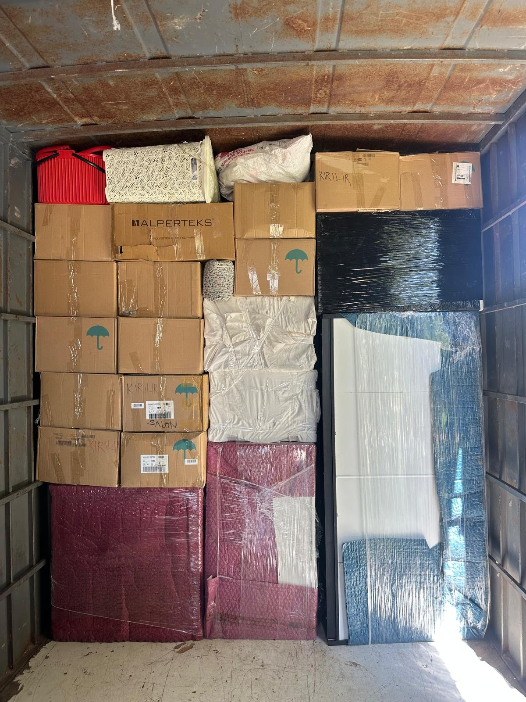

Nakliyat fiyatı neden telefonda net söylenemez?
Bir nakliyeci telefonda kesin fiyat veriyorsa iki ihtimal vardır: ya fiyatı yüksek tutmuştur ya da taşıma günü ek ücret çıkaracaktır. Doğru fiyat; eşya hacmi, kat, asansör, mesafe ve tarih verilerinin tamamı bilindiğinde hesaplanabilir. Bu yüzden ciddi firmalar önce ücretsiz keşif yapar.
1. Eşya hacmi (m³)
Fiyatın temel girdisi metreküptür. 1+1 bir ev ortalama 15-20 m³, 2+1 ev 25-35 m³, 3+1 ev 35-50 m³, villa 60 m³ üzeri yer kaplar. Kitaplık, kütüphane veya çok sayıda koli hacmi hızla artırır.
2. Kat ve asansör durumu
Asansörsüz 4. kattan taşıma, asansörlü 10. kattan taşımadan daha pahalıdır. Çünkü merdiven işçiliği hem süreyi hem ekip sayısını artırır. Dış cephe asansörü kullanıldığında bu maliyet kalemi büyük ölçüde düşer.
3. Mesafe ve güzergâh
Şehir içi taşımada mesafeden çok trafik ve park imkânı önemlidir. Şehirler arası taşımada ise kilometre, yakıt, köprü/otoyol ücretleri ve dönüş yükü olup olmadığı fiyatı belirler.
4. Paketleme kapsamı
Sadece mobilya streçlenmesi mi isteniyor, yoksa mutfak dolaplarının tamamı da mı paketlenecek? Full paketleme, malzeme ve işçilik olarak fiyata en çok etki eden kalemlerden biridir.
5. Demontaj ve montaj ihtiyacı
Ankastre mutfak, gardırop, vestiyer ve yatak odası takımlarının sökülüp kurulması usta işçiliği gerektirir. Montajcı sayısı arttıkça fiyat artar.
6. Tarih ve sezon
Haziran-Eylül arası ve ay sonları nakliyatın en yoğun dönemidir. Ay ortası ve hafta içi günlerde taşınabiliyorsanız %10-20 daha uygun fiyat alabilirsiniz.
7. Araç tipi ve sayısı
Dar sokaklarda büyük araç giremediği için küçük aktarma aracı gerekir; bu da ek maliyettir. Eşya tek araca sığmıyorsa ikinci sefer ya da ikinci araç devreye girer.
8. Hassas ve özel eşyalar
Piyano, kasa, akvaryum, antika mobilya ve büyük ekran televizyonlar özel ambalaj ve ekipman gerektirir.
9. Depolama ihtiyacı
Yeni evin teslim tarihi uymuyorsa eşyanın depoda beklemesi gerekir. Depolama süresi ve hacmi fiyata eklenir; bizde şehirler arası taşımalarda ilk 15 gün ücretsizdir.
Teklif alırken sorulacak 5 soru
1) Fiyat sabit mi, taşıma günü değişir mi? 2) Asansör dâhil mi? 3) Sigorta var mı, poliçeyi görebilir miyim? 4) Paketleme malzemesi ücretli mi? 5) Montaj ekibi aynı gün geliyor mu? Bu beş sorunun yazılı cevabını alırsanız sürpriz yaşamazsınız.